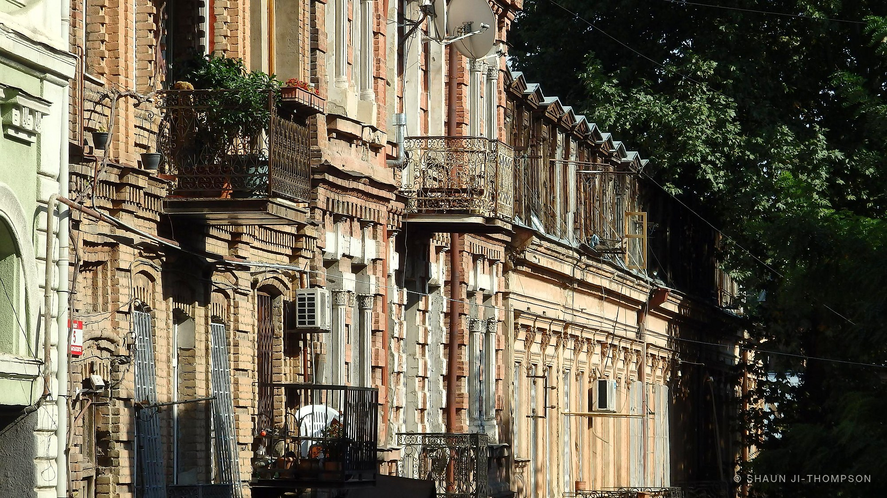
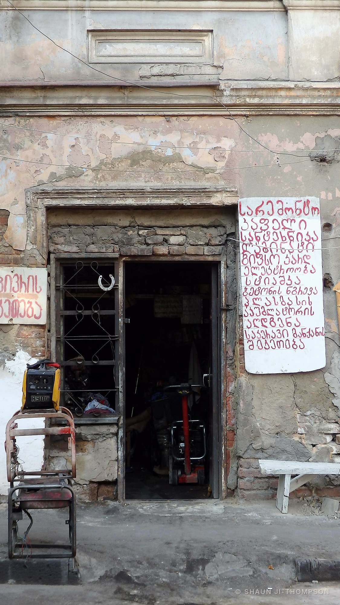
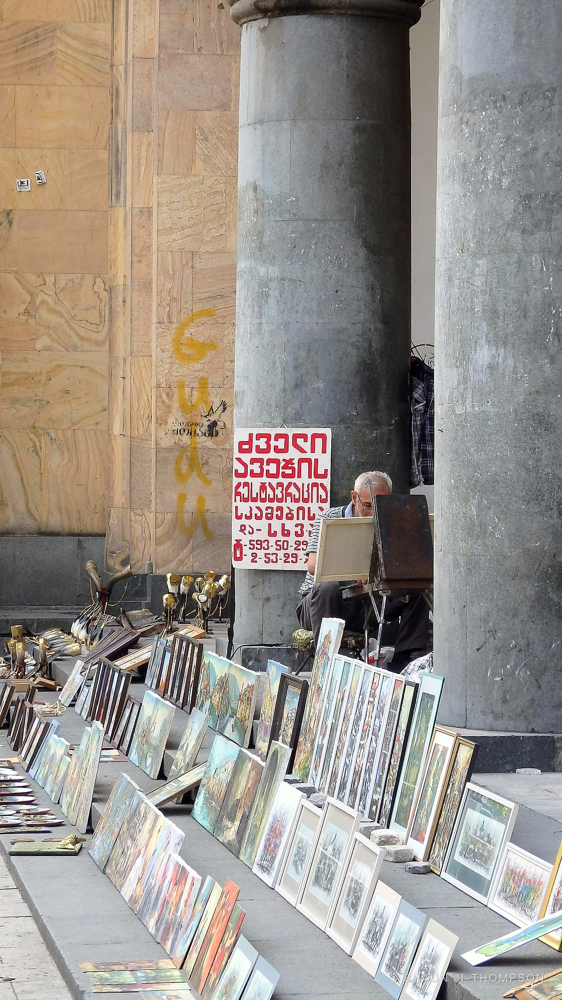
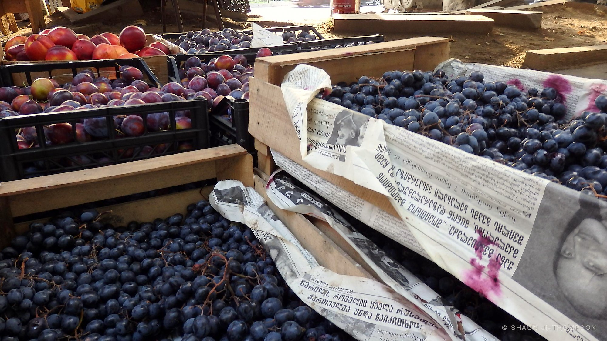
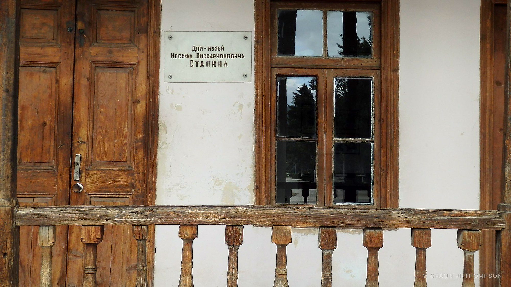
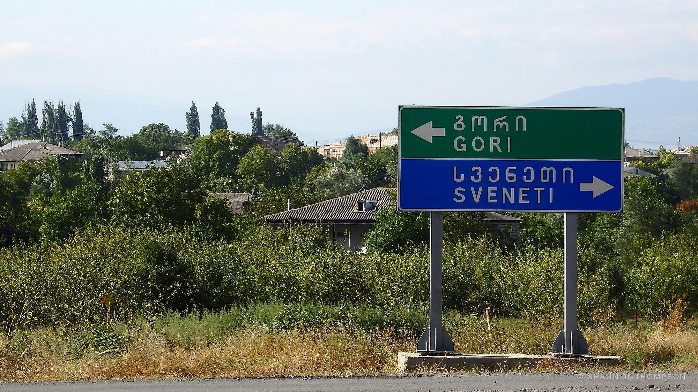
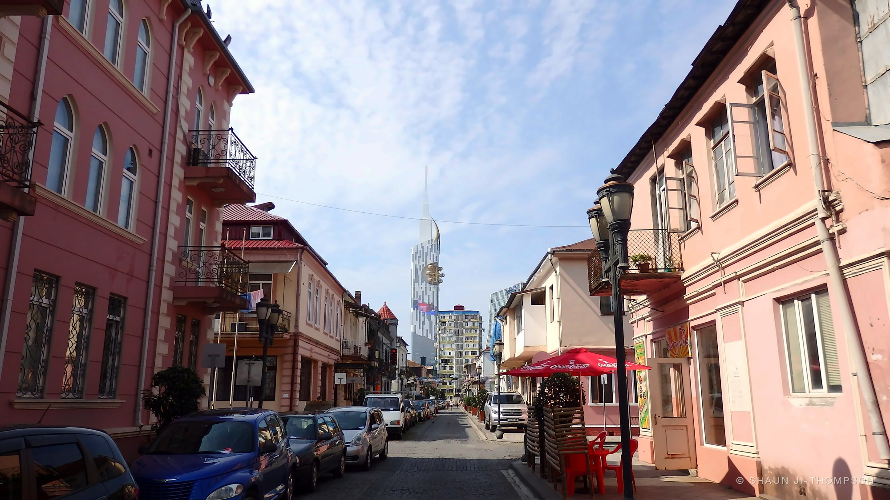
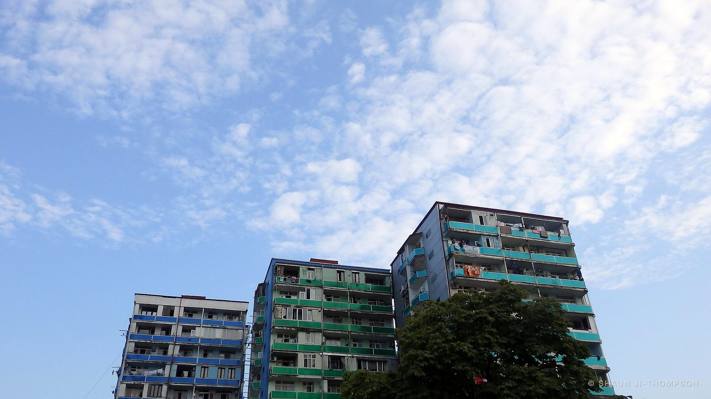

Travelled August 2015Published November 2026
Georgia
საქართველო
from Tbilisi to the Black Sea
Photos from Georgia in August 2015: Tbilisi, Gori, then west to Batumi on the Black Sea, before crossing into Turkey for Trabzon.
- Stops
- 3
- Route
- Tbilisi · Gori · Batumi
- Photographs
- Shaun Ji-Thompson
The route

Tbilisi
Map ↑
Tbilisi, on the Mtkvari river. Brick houses with iron balconies on the streets, wooden galleries round the courtyards behind them.





Gori
Map ↑
Gori, on the plain of Shida Kartli. Stalin was born here; the house he grew up in and his railway carriage stand in the museum grounds.


Batumi
Map ↑
Batumi, on the Black Sea a few kilometres from the Turkish border. Low pastel streets in the old town, Soviet blocks behind, a pebble beach in front.



The score · Shaun Ji-Thompson · 2026
Overture “Beyond the Darial Pass”
An overture for wind orchestra after Aivazovsky’s 1868 painting of the Darial Gorge, on the old road north from Tbilisi through the Caucasus.
What did you think?
A reaction, a correction, a place I should go next. I read every note.